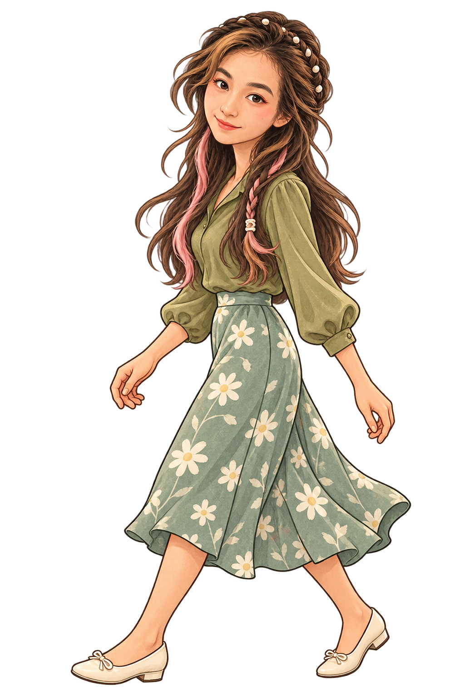

BEYOND THE PAGES
书页之外，还有一些想与你分享的日常。
点一个路标，和我走过去。

随时停下来，也可以直接抵达终点。
LET’S KEEP IN TOUCH
如果你想聊聊研究、翻译、写作，或一项合作，欢迎联系我。
请开启 JavaScript 以体验站点切换。Enable JavaScript to explore the stations. Activez JavaScript pour parcourir les étapes.